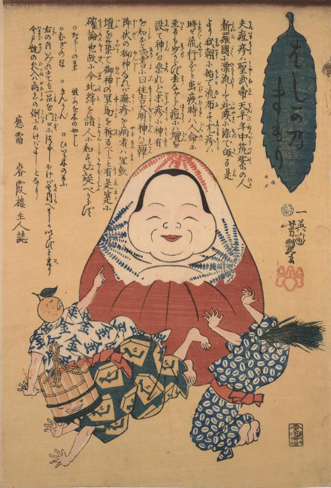

中央に達磨のようなものが据えられている。金柑や麦、飼葉桶の頭に持つ化物達がその達磨のようなものを指差して、おののいたり逃げ回ったりしている。
著作者：歌川芳艶／出典：親書誌：U426_nichibunken_0004：はしかのまもり；ハシカノマモリ／日付：2006／資源識別子：U426_nichibunken_0004_0001_0000
Copyright (c)2010- International Research Center for Japanese Studies, Kyoto, Japan. All rights reserved.